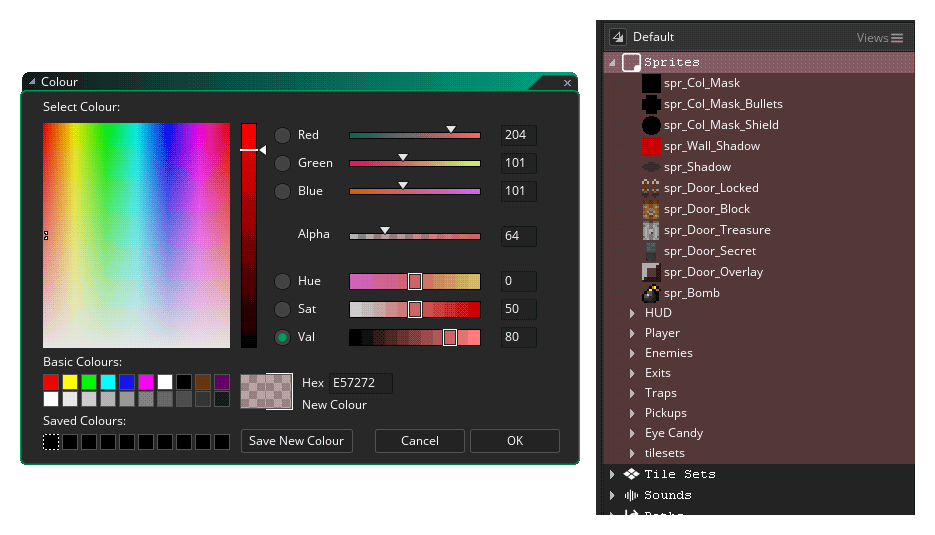
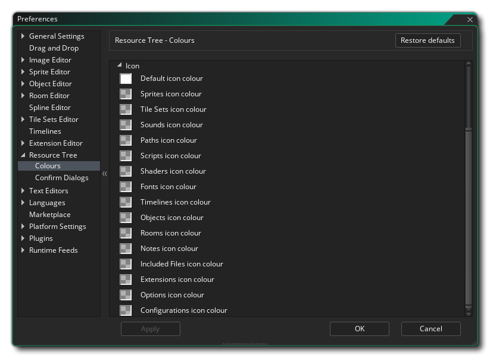

Les préférences de l'arborescence de ressources sont utilisées pour définir certaines propriétés de fonctionnement de l'arborescence de ressources et de ses éléments. Les principales options sont:
- Nombre maximal de ressources ouvertes simultanément sans avertissement: vous pouvez sélectionner plusieurs ressources à ouvrir à la fois en utilisant
 /
/  +
+  pour les sélectionner et ensuite un clic droit
pour les sélectionner et ensuite un clic droit  et en choisissant tout ouvert. Si vous avez sélectionné plus que le nombre spécifié dans cette option, un avertissement s'affichera. Le fait d'avoir trop de ressources ouvertes à la fois peut entraîner des problèmes de performances sur les ordinateurs inférieurs. La valeur par défaut est 20.
et en choisissant tout ouvert. Si vous avez sélectionné plus que le nombre spécifié dans cette option, un avertissement s'affichera. Le fait d'avoir trop de ressources ouvertes à la fois peut entraîner des problèmes de performances sur les ordinateurs inférieurs. La valeur par défaut est 20. - Sprite double-clic ouvre l'éditeur d'image: Par défaut double-cliquer sur n'importe quelle ressource ouvrira cette ressource pour l'éditer, mais souvent en traitant des sprites, après l'installation initiale quand vous créez la nouvelle ressource, vous l'ouvrez pour éditer l'image plutôt que les propriétés d'image-objet. La sélection de cette option ouvre l'éditeur d'image pour la ressource d'image-objet au lieu de la ressource d'image-objet elle-même. Vous pouvez toujours ouvrir l'éditeur de sprites en cliquant droit et en sélectionnant Propriétés ouvertes. Cette option est désactivée par défaut.
- Le double clic sur l'objet ouvre tous les événements de l'objet: Par défaut, double-cliquer sur n'importe quelle ressource ouvrira cette ressource pour l'éditer, mais souvent en traitant des objets, après l'installation initiale quand vous créez la nouvelle ressource, vous l'ouvrez pour éditer les événements seulement plutôt que les propriétés d'objet. La sélection de cette option ouvre les différents événements d'objet dans un nouvel espace de travail, chaque événement ayant son propre onglet dans le nouvel espace de travail. Vous pouvez toujours ouvrir l'éditeur d'objet en cliquant avec le bouton droit de la souris et en sélectionnant Propriétés ouvertes. Cette option est désactivée par défaut.
- La police des ressources peut être inférieure à 100%: lorsque vous sélectionnez cette option et modifiez l'échelle de la taille des éléments de ressource, vous pouvez forcer GameMaker Studio 2 à réduire la taille du texte et la taille des icônes dans l'arborescence des ressources. 100%. Par défaut, cette option est désactivée et le texte de l' arborescence des ressources n'intensifier pas vers le bas.
- La police de ressources peut dépasser 100%: lorsque vous sélectionnez cette option, puis modifiez l'échelle de taille de l'élément ressource, vous pouvez forcer GameMaker Studio 2 à augmenter la taille du texte et la taille de l'icône pour les éléments de l'arborescence des ressources. 100%. Par défaut, cette option est activée et le texte de l' arborescence des ressources intensifiera.
- Zoom par défaut (%): définit le pourcentage de zoom par défaut pour l'arborescence des ressources lorsque vous démarrez un nouveau projet. La valeur par défaut est 100%.
- Zoom minimum (%): définit la valeur de zoom minimale autorisée pour l'arborescence de ressources. La valeur par défaut est 50%.
- Zoom maximal (%): définit la valeur de zoom maximale autorisée pour l'arborescence de ressources. La valeur par défaut est 250%.
- Afficher les séparateurs horizontaux: vous pouvez activer / désactiver les séparateurs horizontaux entre différents types d'actifs dans l'arborescence des ressources. Ceci est vérifié par défaut pour montrer les séparateurs.

- Afficher les lignes d'arbre: Ici, vous pouvez activer / désactiver les lignes d'arbres qui sont affichées sur le côté des actifs dans l'arborescence des ressources. Ceci est vérifié par défaut pour montrer les lignes d'arbres.

- Afficher les icônes de noeud de groupe: Activez ou désactivez la représentation d'icône de chaque type de ressource affiché à côté du nom de ressource. Ceci est désactivé par défaut.
Ici, vous pouvez modifier le jeu de couleurs utilisé par GameMaker Studio 2 lors de l'affichage de l'arborescence des ressources. Cette section est divisée en trois groupes suivants:
- Contexte Cette section vous permet de définir la couleur d'arrière-plan des noeuds d'immobilisation principaux dans l'arborescence des ressources. En cliquant sur l'un d'entre eux, vous allez ouvrir le sélecteur de couleur où vous pouvez choisir la couleur et l'alpha qui doit être mélangé avec la couleur IDE générale pour le nœud. La valeur par défaut de chacun est $FFFFFFFF.
- 
- Icône:  Cette section vous permet de définir la couleur et l'alpha des icônes de dossier utilisées pour désigner les différents types d'actifs de l'arborescence des ressources. La valeur par défaut de chacun est $FFFFFFFF. Notez que si vous définissez la valeur alpha sur 0, vous ne verrez pas ces icônes.
- Étiquette:
Le "label" est le texte qui est utilisé pour décrire ou nommer le nœud ou l'élément dans l'arbre des ressources, et ici vous pouvez changer la couleur du texte ainsi que la police et le style à utiliser pour cela. Vous devez d'abord modifier les paramètres par défaut pour créer une base pour tous les nœuds d'arborescence de ressources, puis continuer à modifier les paramètres d'étiquette de nœud individuels comme requis (notez qu'ils auront tous "Use Default" sélectionné pour commencer).
- Options diverses
Ces options affectent certaines propriétés de couleur globales pour l'arborescence des ressources:
- Couleur du séparateur horizontal: Couleur de la barre qui sépare chaque type de ressource discret dans l'arborescence. La couleur par défaut est $3E3E3EFF.
- Couleur de la ligne d'arbre: La couleur qui sera utilisée pour dessiner les lignes d'arbres entre différents nœuds de ressources. La couleur par défaut est $666666FF.
- Sélection de nœud en surbrillance: C'est la couleur qui sera utilisée pour mettre en évidence les nœuds sélectionnés dans l'arborescence des ressources. La couleur par défaut est $039D5BFF.
Ici, vous pouvez sélectionner le comportement des dialogues de confirmation lorsque vous travaillez avec une ressource de l'arbre des ressources. Les options disponibles sont:
- Réponse automatique à la suppression de ressource: Lorsque vous supprimez une ressource de l'arbre de ressources, vous recevez normalement un avertissement vous demandant si vous êtes sûr de vouloir continuer. En réglant cette option sur "OK", le message sera supprimé comme si vous aviez cliqué sur le bouton "OK" pour continuer. La valeur par défaut est "Afficher le message".
- Réponse automatique à l'ouverture de plusieurs ressources: Comme indiqué ci-dessus dans les préférences générales de l'arborescence des ressources, lorsque vous ouvrez plusieurs ressources à la fois dans l'arborescence, vous pouvez recevoir un avertissement si le nombre dépasse le nombre spécifié. En réglant cette option sur "OK", l'avertissement sera supprimé comme si vous aviez cliqué sur le bouton "OK" pour continuer. La valeur par défaut est "Afficher le message".
- Réponse automatique à la définition d'un parent de pièce via un nœud: Lorsque vous faites glisser une pièce sur une autre pièce de l'arborescence et que vous la relâchez, un message vous demande si vous souhaitez faire de la pièce un "enfant" de la pièce. tombé sur. En réglant cette option sur "OK", l'avertissement sera supprimé comme si vous aviez cliqué sur le bouton "OK" pour continuer. La valeur par défaut est "Afficher le message".
- Réponse automatique à la suppression de vues personnalisées: lorsque vous avez créé une vue personnalisée de l'arborescence de ressources et que vous avez choisi de la supprimer, un message vous demande si vous souhaitez continuer et supprimer la vue. En réglant cette option sur "OK", l'avertissement sera supprimé comme si vous aviez cliqué sur le bouton "OK" pour continuer. La valeur par défaut est "Afficher le message".
- Réponse automatique à la conversion DnD™ en langage GameMaker: Lorsque vous sélectionnez l'option de conversion d'un nœud DnD™ en langage GML, vous serez invité à confirmer la modification car elle ne peut pas être annulée. En réglant cette option sur "OK", l'avertissement sera supprimé comme si vous aviez cliqué sur le bouton "OK" pour continuer. La valeur par défaut est "Afficher le message".